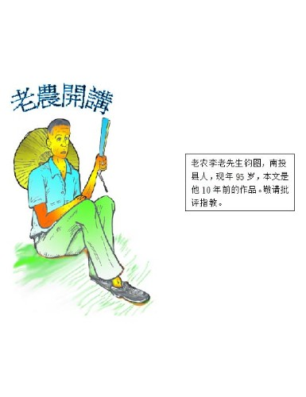

历史不会倒退
历史的进展是螺旋式的，往了又回来，但是回来的一条路，已经不是旧路，而是另一条的新路，由这样发展前进，没有旧路可鉴，前路不能开拓，回顾旧路，就是历史，新路可贵，旧路也不可忘，因为知旧才能创新。经济的进展也不能离开这个原则，两百年前亚当斯密斯的自由经济，重现于现在，可是现在的自由经济，不是昔日的个人的自由经济，现在所行的自由经济，是为着团体的自由经济而铺路，不然就无意义。亚当斯密斯后，有马夏尔、凯思斯等经济学家，来补前经济学说之不足，对于不合时代的，给与补充、改正，使当政者，有正确的途径可走。凯因斯学说，修正了古典学说的个人自由经济之缺点，给与国家财政有利于指挥运用，发挥了短期的辉煌成果。现在功成身退，换来庇古的学说，提出了工厂得来的利益，是牺牲了社会的成本，如环境的污染及吸取学术的成果，所以其利益应归还社会，这论说为未来社会主义铺路。国营企业之无效率，发现人性的缺点、惰性、自私、贪污、无自由等等……，无法与私有个人经济企业相抗争，渐渐被私人企业所取代。
人性的缺点带来经济专家苦心积虑，为要适应时代，而想创造更美好的前途学说，总归于无效。因而又回到旧路，它可说已经完备了，所以我们为着自然的发展，在社会上需要符合第二欲望制度的时候了。第一欲望是生存上需要的物质，在生产机械化以后，形成大量的生产，生活物资的问题可以顺利解决了，但是有一个最恼人的，就是生殖问题，也就是男女两性的问题，此欲虽是初级的动物欲，它有神物合一的症结所在，无法以物欲单纯来处理，它是要在人性高度化时，才能解决的问题，虽神给其种种惩罚，如性病、情杀、家庭破裂等等，但是人类为着快乐关系，到现在还停留在原始时代。尤其是物资丰富、体力增强，西风性自由野性的东渐，越使此道猖獗，致使神所企望的佛化，遥遥无期。此一问题，上帝对亚当与夏娃，也无可奈何。只派其下凡受苦，让其不超生而已。总之，人要记着，万恶淫为首，精神欲之提高时，还沉沦于下级欲之间，是可耻下等的事，同时也无法达到精神纯化，身心贞净。对家庭对配偶之和乐，是寻求在于一夫一妇的纯情间，而不是复杂的感情间，杂情是兽化的行为，阻碍神化、佛化的进程，是神最大烦恼的大问题，不可以好玩小视之，戒哉。